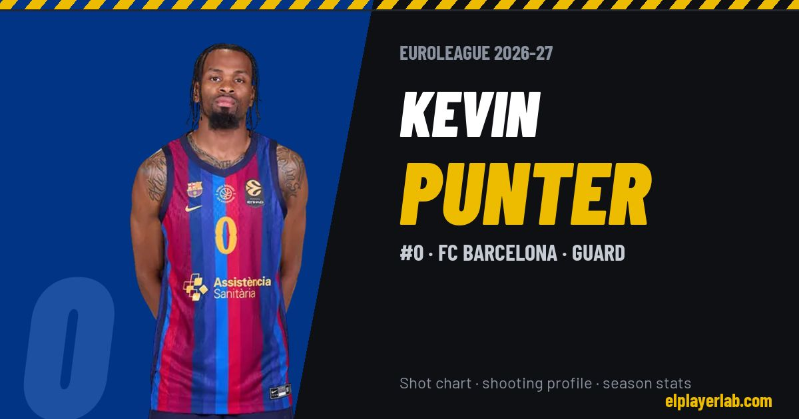

FC Barcelona · Euroleague 2026-27
Kevin Punter
#0 · Guard · FC Barcelona · 2026-27 · 3 games · 20.0 pts · 2.7 reb · 2.3 ast a game

- Number
- 0
- Position
- Guard
- Height
- 193 cm
- Weight
- 86 kg
- Born
- 1993-06-25
- Country
- Serbia
Career
- FC Barcelona 2024-2027
- Partizan 2021-2024
- Olimpia Milano 2020-2021
- Crvena zvezda 2019-2020
- Olympiacos 2019
- Virtus Bologna 2018-2019
- AEK Athens 2018
- Rosa Radom 2017-2018
- Antwerp Giants 2017
- Lavrio 2016-2017
- State Fair CC (NCAA) 2012-2014
Euroleague Player Lab: shot charts, shooting profiles and season stats for every player, rebuilt after every game.